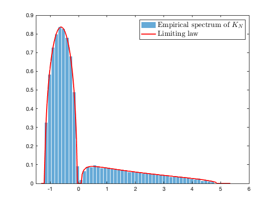
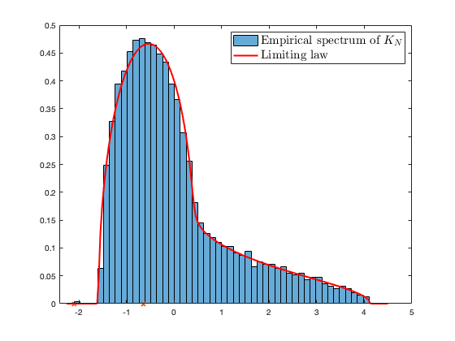
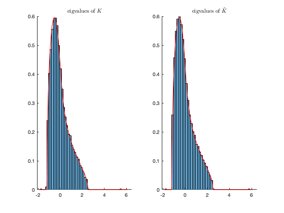

Section 4.4 Properly scaling kernels
This page contains simulations in Section 4.4.
Contents
Eigenspectrum of properly scaling kernel: "null model"
close all; clear; clc coeff = 4; p = 200*coeff; n = 800*coeff; c = p/n; f0 = @(t) tanh(t); integral_max = Inf; a0 = integral(@(t) f0(t).*exp(-t.^2/2)/sqrt(2*pi), -integral_max,+integral_max); f = @(t) f0(t) - a0; a1 = integral(@(t) t.*f(t).*exp(-t.^2/2)/sqrt(2*pi), -integral_max,+integral_max); a2 = integral(@(t) (t.^2-1).*f(t).*exp(-t.^2/2)/sqrt(2*pi), -integral_max,+integral_max)/sqrt(2); nu = integral(@(t) f(t).^2.*exp(-t.^2/2)/sqrt(2*pi), -integral_max,+integral_max); Z_dist = 'gauss'; switch Z_dist case 'gauss' Z = randn(p,n); kappa = 3; case 'bern' % Bernoulli with pairs (1,.5),(-1,.5) Z = sign(randn(p,n)); kappa = 2; case 'student' % student-t with param nu_student nu_student = 7; Z = trnd(nu_student,p,n)/sqrt(nu_student/(nu_student-2)); kappa = 6/(nu_student-4)+3; end K_N = f(Z'*Z/sqrt(p))/sqrt(p); K_N = K_N - diag(diag(K_N)); eigs_K_N = eig(K_N); [~,ind] = sort(eigs_K_N); eigs_K_N = eigs_K_N(ind); if min(eigs_K_N)<0 edges = linspace(min(eigs_K_N)*1.1,max(eigs_K_N)*1.1,200); else edges = linspace(min(eigs_K_N)*0.9,max(eigs_K_M)*1.1,200); end if abs(a1)<1e-6 mu = sqrt(max(4*nu/c - edges.^2,0))*c/nu/2/pi; else clear i % make sure i stands for the imaginary unit y = 1e-5; zs = edges+y*1i; mu = zeros(length(zs),1); m=0; for j=1:length(zs) z = zs(j); m_tmp=-1; while abs(m-m_tmp)>1e-6 m_tmp=m; m = -1/( z + a1^2*m/(c+a1*m) + (nu-a1^2)*m/c ); end mu(j)=imag(m)/pi; end end figure histogram(eigs_K_N, 50, 'Normalization', 'pdf', 'EdgeColor', 'white'); hold on; plot(edges,mu,'r', 'Linewidth',2); legend('Empirical spectrum of $K_N$', 'Limiting law', 'FontSize', 15, 'Interpreter', 'latex');
Possible non-informative spikes
close all; clear; clc coeff = 4; p = 128*coeff; n = 512*coeff; c = p/n; f0 = @(t) max(t,0); %f0 = @(t) (t.^2-1)/sqrt(2) + t; integral_max = Inf; a0 = integral(@(t) f0(t).*exp(-t.^2/2)/sqrt(2*pi), -integral_max,+integral_max); f = @(t) f0(t) - a0; a1 = integral(@(t) t.*f(t).*exp(-t.^2/2)/sqrt(2*pi), -integral_max,+integral_max); a2 = integral(@(t) (t.^2-1).*f(t).*exp(-t.^2/2)/sqrt(2*pi), -integral_max,+integral_max)/sqrt(2); nu = integral(@(t) f(t).^2.*exp(-t.^2/2)/sqrt(2*pi), -integral_max,+integral_max); Z_dist = 'gauss'; switch Z_dist case 'gauss' Z = randn(p,n); kappa = 3; case 'bern' % Bernoulli with pairs (1,.5),(-1,.5) Z = sign(randn(p,n)); kappa = 2; case 'student' % student-t with param nu_student nu_student = 7; Z = trnd(nu_student,p,n)/sqrt(nu_student/(nu_student-2)); kappa = 6/(nu_student-4)+3; end K_N = f(Z'*Z/sqrt(p))/sqrt(p); K_N = K_N - diag(diag(K_N)); eigs_K_N = eig(K_N); [~,ind] = sort(eigs_K_N); eigs_K_N = eigs_K_N(ind); if min(eigs_K_N)<0 edges = linspace(min(eigs_K_N)*1.1,max(eigs_K_N)*1.1,200); else edges = linspace(min(eigs_K_N)*0.9,max(eigs_K_M)*1.1,200); end if abs(a1)<1e-6 mu = sqrt(max(4*nu/c - edges.^2,0))*c/nu/2/pi; else clear i % make sure i stands for the imaginary unit y = 1e-5; zs = edges+y*1i; mu = zeros(length(zs),1); m=0; for j=1:length(zs) z = zs(j); m_tmp=-1; while abs(m-m_tmp)>1e-6 m_tmp=m; m = -1/( z + a1^2*m/(c+a1*m) + (nu-a1^2)*m/c ); end mu(j)=imag(m)/pi; end end figure histogram(eigs_K_N, 60, 'Normalization', 'pdf', 'EdgeColor', 'white'); hold on; plot(edges,mu,'r', 'Linewidth',2); if and(kappa~=1,abs(a2)>1e-5) delta = sqrt(2/(kappa-1))/a2; if and(abs(a1)>1e-5, abs(abs(delta)-abs(1/a1))>1e-5) spike1 = -1/c/delta - a1^2*delta/(1+a1*delta) - (nu-a1^2)*delta; spike2 = 1/c/delta + a1^2*delta/(1-a1*delta) + (nu-a1^2)*delta; if (nu-a1^2)*delta^2+(a1*delta)^2/(1+a1*delta)^2 < 1/c plot(spike1,0,'xr', 'LineWidth', 2); disp(spike1) end if (nu-a1^2)*delta^2+(a1*delta)^2/(1-a1*delta)^2 < 1/c plot(spike2,0,'xr', 'LineWidth', 2); disp(spike2) end else spike = -nu/a1 - a1*(2-c)/2/c; plot(spike,0,'xr', 'LineWidth', 2); disp(spike) end end legend('Empirical spectrum of $K_N$', 'Limiting law', 'FontSize', 15, 'Interpreter', 'latex');
-1.7701
Asymptotic equivalent of properly scaling kernel
close all; clear; clc coeff = 8; p = 128*coeff; n = 256*coeff; c = p/n; cs = [1/2 1/2]; k = length(cs); % a2=0 %f0 = @(t) t; %f0 = @(t) erf(t); %f0 = @(t) tanh(t); %f0 = @(t) atan(t); %f0 = @(t) 1./(1+exp(-t)); %f0 = @(t) sign(t); % a1=0 %f0 = @(t) abs(t); %f0 = @(t) cos(t); %f0 = @(t) (t.^2-1)/sqrt(2); %f0 = @(t) (t.^3-3*t)/sqrt(6); %f0 = @(t) t.^4/12; % a1, a2 neq 0 f0 = @(t) max(t,0); integral_max = Inf; a0 = integral(@(t) f0(t).*exp(-t.^2/2)/sqrt(2*pi), -integral_max,+integral_max); f = @(t) f0(t) - a0; a1 = integral(@(t) t.*f(t).*exp(-t.^2/2)/sqrt(2*pi), -integral_max,+integral_max); a2 = integral(@(t) (t.^2-1).*f(t).*exp(-t.^2/2)/sqrt(2*pi), -integral_max,+integral_max)/sqrt(2); nu = integral(@(t) f(t).^2.*exp(-t.^2/2)/sqrt(2*pi), -integral_max,+integral_max); Z_dist = 'gauss'; testcase_option = 'mixed'; switch testcase_option case 'iid' means = @(i) zeros(p,1); covs_dif = @(i) zeros(p); case 'means' means = @(i) [zeros(i-1,1);1;zeros(p-i,1)]*2; covs_dif = @(i) zeros(p); case 'var' means = @(i) zeros(p,1); covs_dif = @(i) eye(p)*((-1)^i/sqrt(p)*3); case 'mixed' means = @(i) (-1)^(i)*[1;zeros(p-1,1)]*2; covs_dif = @(i) eye(p)*((-1)^i/sqrt(p)*5); end switch Z_dist case 'gauss' Z = randn(p,n); kappa = 3; case 'bern' % Bernoulli with pairs (1,.5),(-1,.5) Z = sign(randn(p,n)); kappa = 2; case 'student' % student-t with param nu_student nu_student = 7; Z = trnd(nu_student,p,n)/sqrt(nu_student/(nu_student-2)); kappa = 6/(nu_student-4)+3; end J = @(i) [zeros(n*sum(cs(1:i-1)),1);ones(n*cs(i),1);zeros(n*sum(cs(i+1:k)),1)]; W=zeros(p,n); for i=1:k W(:,sum(cs(1:(i-1)))*n+1:sum(cs(1:i))*n)=sqrtm(eye(p)+covs_dif(i))*Z(:,sum(cs(1:(i-1)))*n+1:sum(cs(1:i))*n); end X=zeros(p,n); for i=1:k X(:,sum(cs(1:(i-1)))*n+1:sum(cs(1:i))*n)=W(:,sum(cs(1:(i-1)))*n+1:sum(cs(1:i))*n)+means(i)*ones(1,cs(i)*n); end P = eye(n) - ones(n)/n; X_center = X*P; K = f(X_center'*X_center/sqrt(p))/sqrt(p); K = K - diag(diag(K)); [V_K, eigs_K] = eig(K,'vector'); [~,ind] = sort(eigs_K); eigs_K = eigs_K(ind); V_K = V_K(:,ind); if min(eigs_K)<0 edges = linspace(min(eigs_K)*1.1,max(eigs_K)*1.1,200); else edges = linspace(min(eigs_K)*0.9,max(eigs_K)*1.1,200); end if abs(a1)<1e-6 mu = sqrt(max(4*nu/c - edges.^2,0))*c/nu/2/pi; mu = mu'; else clear i % make sure i stands for the imaginary unit y = 1e-5; zs = edges+y*1i; mu = zeros(length(zs),1); m=0; for j=1:length(zs) z = zs(j); m_tmp=-1; while abs(m-m_tmp)>1e-6 m_tmp=m; m = -1/( z + a1^2*m/(c+a1*m) + (nu-a1^2)*m/c ); end mu(j)=imag(m)/pi; end end K_N = f(Z'*Z/sqrt(p))/sqrt(p); K_N = K_N - diag(diag(K_N)); eigs_K_N = eig(K_N); means_average = zeros(p,1); for i=1:k means_average = means_average + means(i)/k; end M = zeros(p,k); V = zeros(n,2*k); t = zeros(k,1); S = zeros(k,k); for i=1:k M(:,i) = means(i)-means_average; V(:,i) = J(i)/sqrt(p); V(:,k+i) = Z'*(means(i)-means_average)/sqrt(p); t(i) = trace(covs_dif(i))/sqrt(p); for j=1:k S(i,j) = trace(covs_dif(i)*covs_dif(j))/sqrt(p); end end A = [a1*(M')*M + a2/sqrt(2)*(t*ones(1,k) + ones(k,1)*(t') + S), a1*eye(k); a1*eye(k), zeros(k)]; K_approx = K_N + V*A*(V'); [V_K_approx, eigs_K_approx] = eig(K_approx,'vector'); [~,ind] = sort(eigs_K_approx); eigs_K_approx = eigs_K_approx(ind); V_K_approx = V_K_approx(:,ind); figure subplot(1,2,1) hold on histogram(eigs_K, 50, 'Normalization', 'pdf', 'EdgeColor', 'white'); plot(edges,mu,'r', 'Linewidth',1); axis([-2.1, 6.5, 0, 0.6]); title('eigvalues of $K$','Interpreter', 'latex'); subplot(1,2,2) hold on histogram(eigs_K_approx, 50, 'Normalization', 'pdf', 'EdgeColor', 'white'); plot(edges,mu,'r', 'Linewidth',1); title('eigvalues of $\tilde K$', 'Interpreter', 'latex'); axis([-2.1, 6.5, 0, 0.6]);